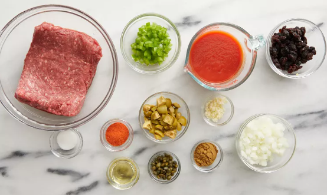
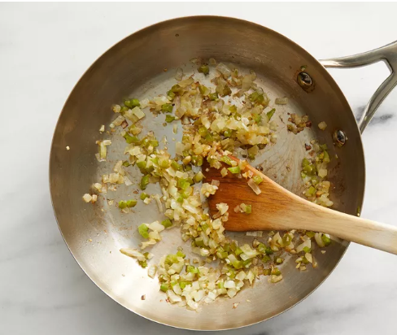
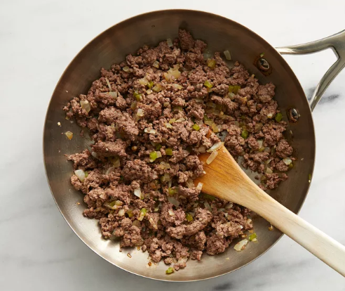

Ingredients
- 1 lb ground beef
- 1 small onion, chopped
- 1 green bell pepper, chopped
- 2 cloves garlic, minced
- 1 (8 oz) can tomato sauce
Directions
- In a skillet, brown beef with onion, pepper, and garlic.
- Stir in tomato sauce, raisins, olives, and spices; simmer 10 min.
- Serve over white rice.
Glossary
- Picadillo
- A seasoned ground meat hash from Latin America.
- Simmer
- Cook just below boiling point.
Notes
Tip: Add a dash of cumin for extra warmth.